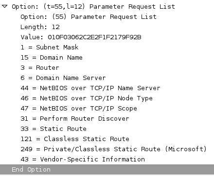

no it's not about a bank of fingers...
Olivier Bilodeau
Social stuff
Identifies software or hardware components
Various types
DHCP Elements to fingerprint
See the slides of the Using DHCP for Passive OS Identification by David LaPorte and Eric Kollman at BlackHat Japan 2007 presentation for more details on the topic.
URL in the last slide
With simple option 55 fingerprints
or BackTrack? but not sure if we have that
PacketFence does this
p0f has been integrated into pf (firewall) to do a similar thing
Like printers, VoIP, and any other browser-less IP device. Yes, it's stupid since it's client controlled but users find it sooo convenient.
Note to pentesters: We [PacketFence] are not the only ones doing this. Avoid at least the backtrack fingerprint and mimic a Win32 one!
Identify OS and IPs on the same segment as you are
Delivery joke
A website dedicated to sharing DHCP fingerprint and tools.
Based on community participation
I hope you enjoyed! See you in the debriefing room.
twitter: @packetfence / identi.ca: @plaxx
delicious: plaxxx / linkedin: olivier.bilodeau